Boca-Aberta
- Área
- Desenho
- Período
- 2013–2014
- Imagens
- 48
Série que funciona como um pequeno diário: uma ideia de desenho por dia, feita com caneta hidrográfica e preenchida com marcador permanente. Os personagens-caixa de boca aberta atravessam a série inteira.
Conceito
O personagem — um quadrado de rosto fino, boca sempre aberta e braços soltos — vira uma forma de recordar o passado. Ele reaparece nos desenhos em preto e branco de 2024, reunidos abaixo.


Do arquivo (42)

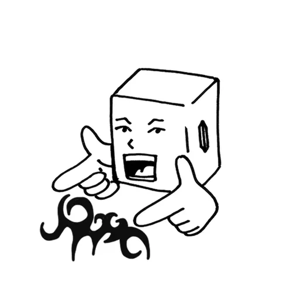

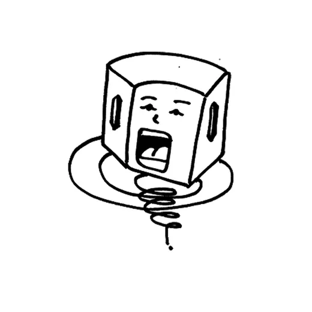

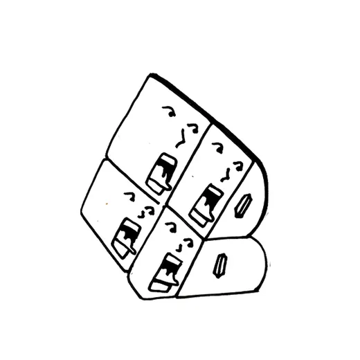

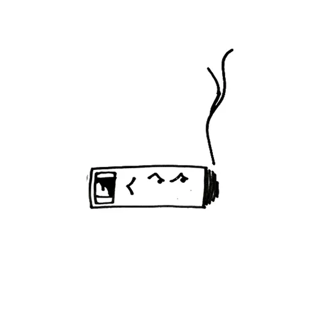

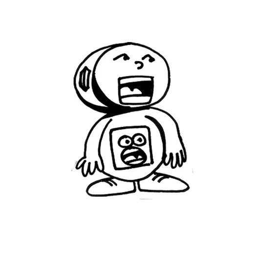

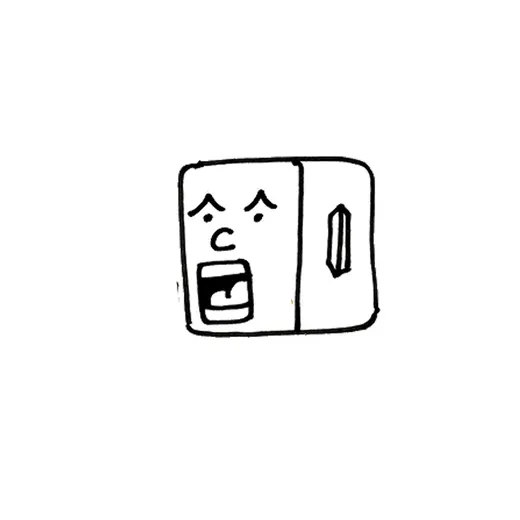

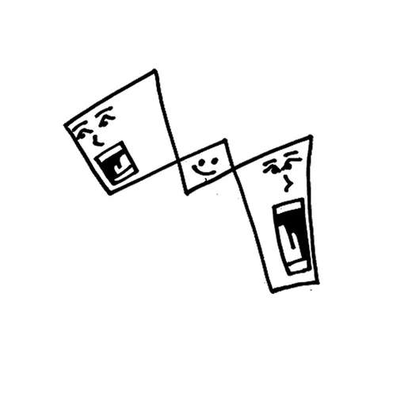

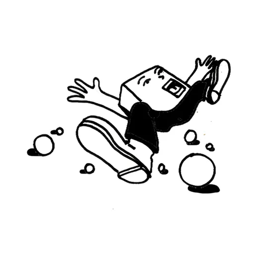

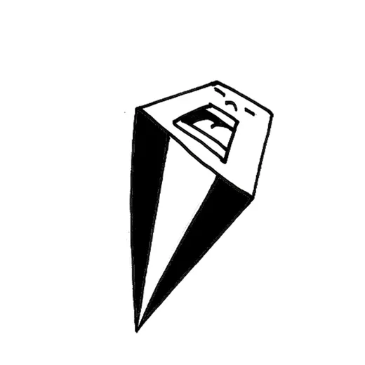

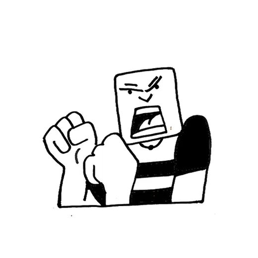

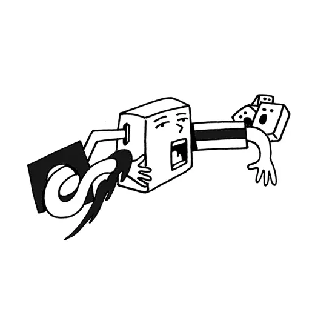


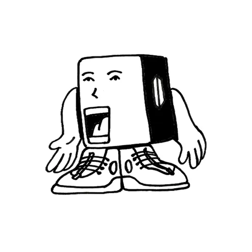

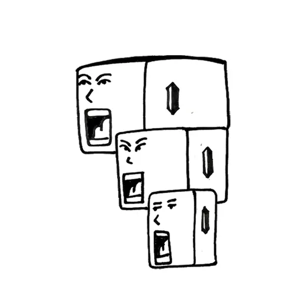

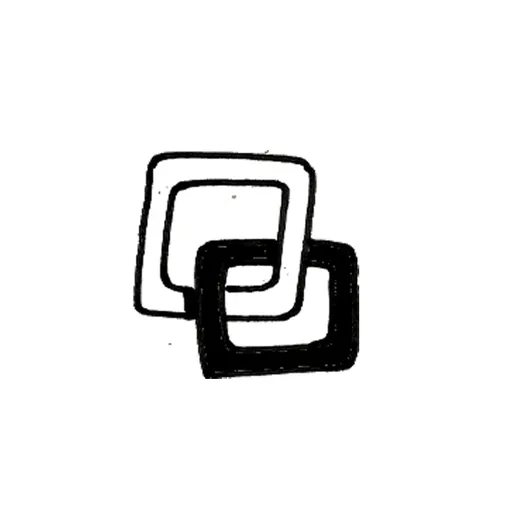

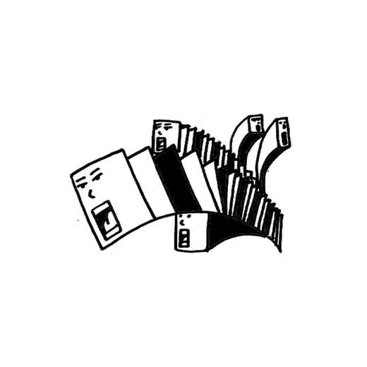

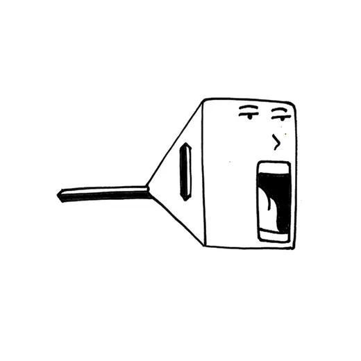

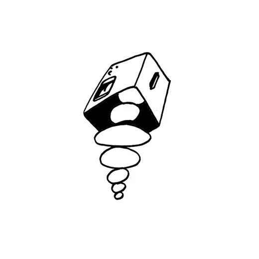

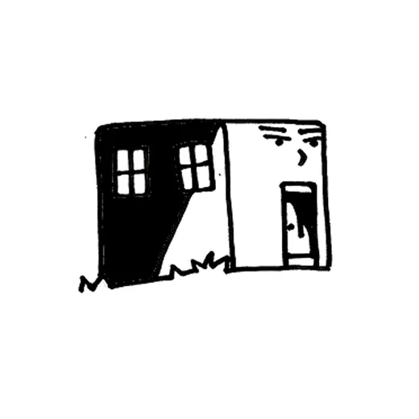

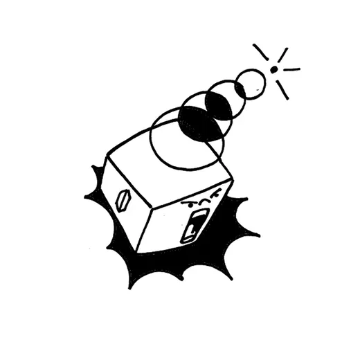

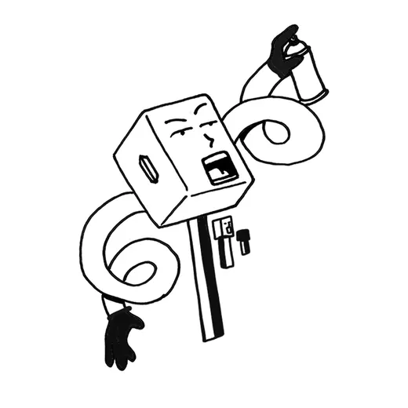

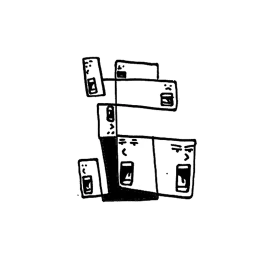

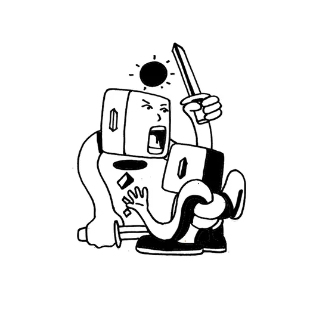

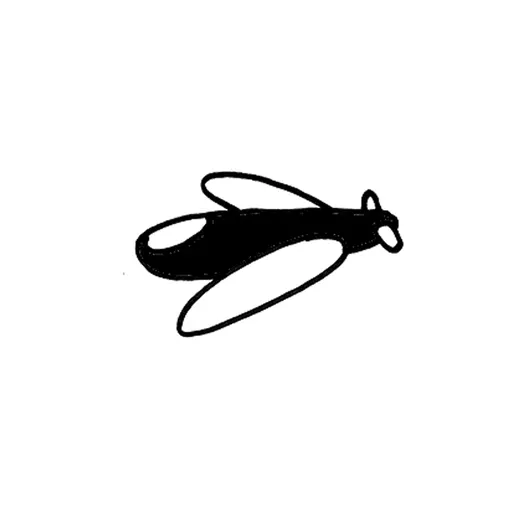

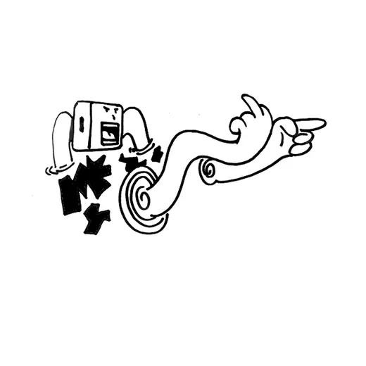

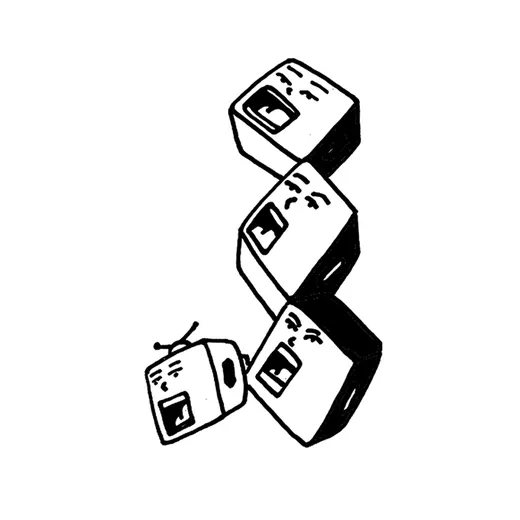

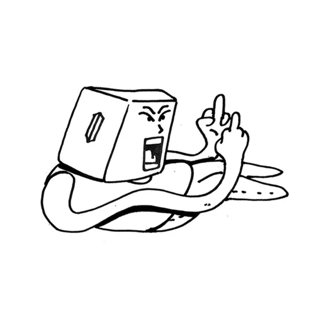

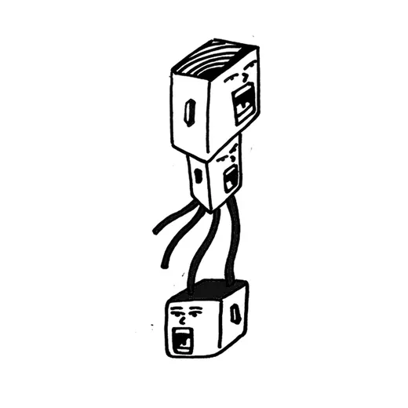

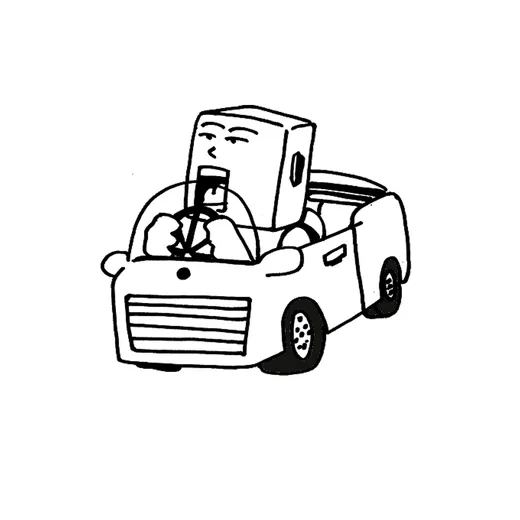

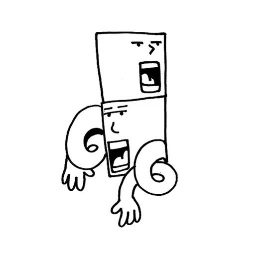


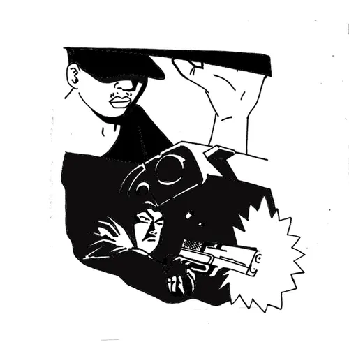

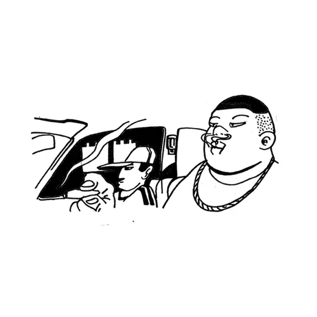


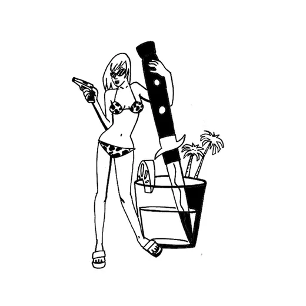

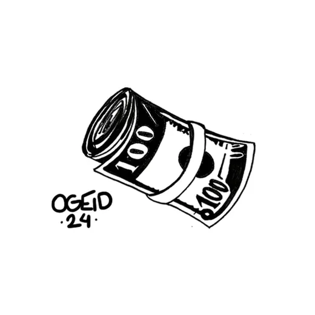

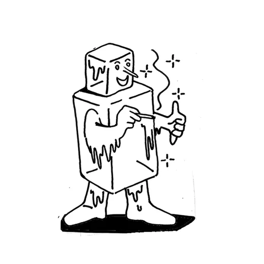

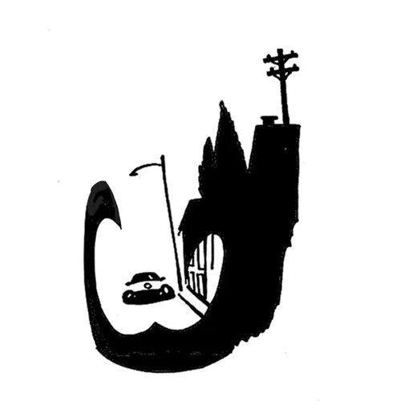


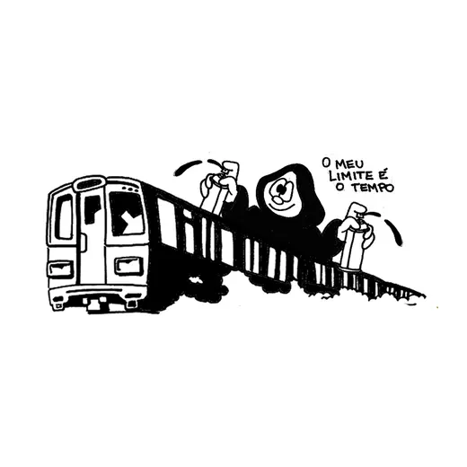

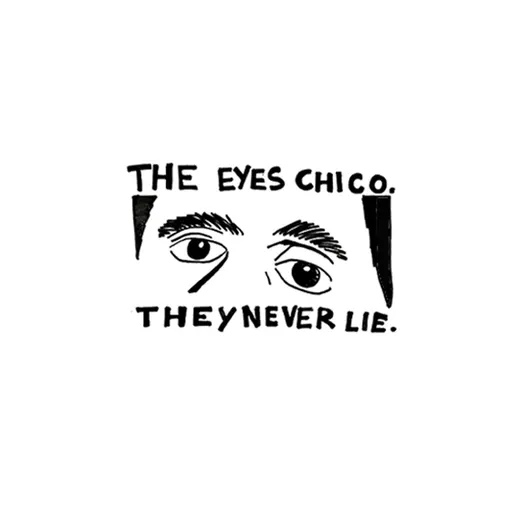